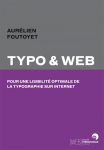
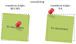

Livre : Typo & web
Le web est désormais typographie. La liberté permise par les nouvelles techniques embarquant des polices, notamment grâce à CSS3, ajoute une nouvelle dimension à la création graphique. Ce livre est consacré à la lisibilité optimale de la typographie sur Internet. Il l'aborde de prime abord…
Lire la suite et commenterAstuce : Prism - coloration syntaxique
Encore un outil de coloration syntaxique me direz-vous ! Il est vrai qu'on en trouve pas mal sur le Web : GeSHi (php), SyntaxHighlighter (JavaScript), Pygments (Python). Mais Prism (JavaScript et CSS) apporte d'indéniables avantages par rapport à ces concurrents : il est léger, très simple…
Lire la suite et commenterdotJS, la plus grosse conférence JavaScript en France
dotJS.eu est la plus grande conférence française sur le JavaScript. Elle aura lieu le 30 novembre 2012 au Théâtre des Variétés à Paris. De nombreux orateurs renommés sont annoncés dont : Jeremy Ashkenas, auteur de Backbone.js et Underscore.js Mr. doob, auteur de Three.js Fat, co-auteur de Twitter…
Lire la suite et commenterArticle : CSS3 : Transformations 2D
CSS3 apporte les transformations en 2 dimensions à travers la propriété transform et une liste de fonctions prédéfinies. Voyons ensemble la prise en charge actuelle de cette propriété et des fonctions qui l'accompagnent.
Lire la suite et commenter